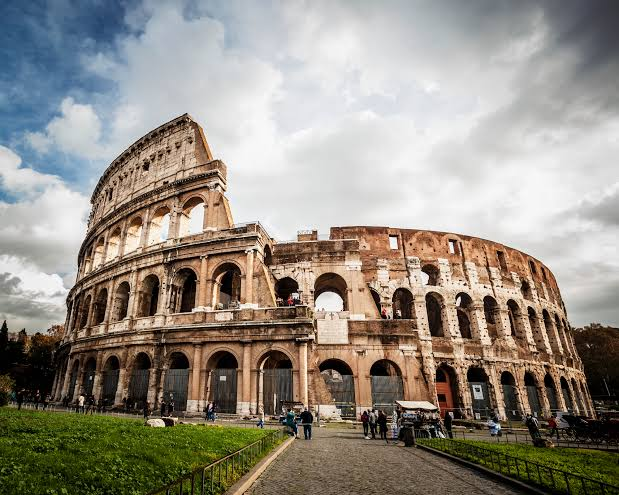

Top Tourist Destinations in the World
Eiffel Tower
Located in the heart of Paris, the most romantic city in the world, the Eiffel Tower has become a universal symbol of travel and a popular tourist destination. A visit to the Eiffel Tower tops many travel lists, and it’s no surprise considering the 7 million visitors who are snapping selfies under the 81-story building
Statue of Liberty

Those visiting New York City will want to make sure to take the time to see the Statue of Liberty.This famous Landmark for the United States was designed by French sculptor Frédéric Bartholdi and was a gift from France to the United States
Colosseum

The Colosseum is an elliptical amphitheatre in the centre of the city of Rome, Italy, just east of the Roman Forum. It is the largest ancient amphitheatre ever built, and is still the largest standing amphitheatre in the world, despite its age.
Niagara Falls
Niagara Falls is a natural site made up of three huge waterfalls, the largest and most powerful in the whole of North America. It’s estimated that Niagara Falls attracts 22.5 million visitors a year, by far the highest number on this list, which is no doubt the reason why it is the most lucrative attraction.
Great Pyramid of Giza

The Pyramids of Giza, standing tall on Egypt's desert plains, are enduring symbols of ancient marvel and mystery. Built as grand tombs for pharaohs, these monumental structures have for millennia captivated imaginations with their scale and precision.